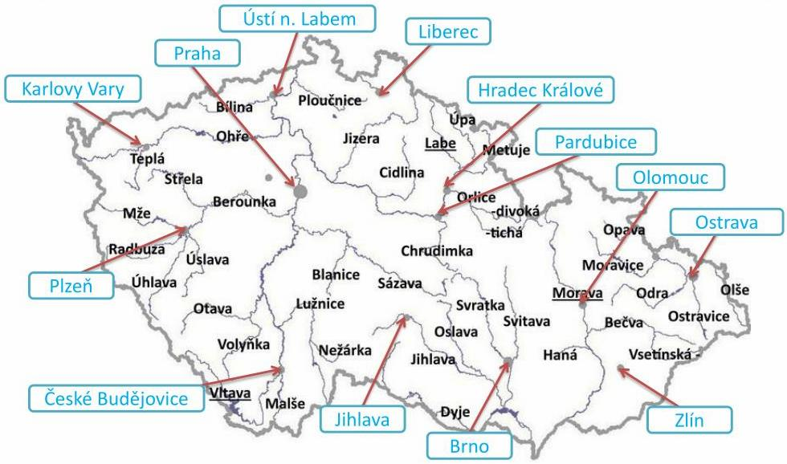

Česká republika má bohaté vodní zdroje, i když nepatří mezi země s
rozsáhlými řekami nebo jezerami. Největší řekou je Labe, následované
Vltavou, Moravou a Odrou. Země je také známá svou sítí rybníků,
přičemž největší je rybník Rožmberk. Voda je klíčová pro
zemědělství, průmysl a turistiku, přičemž české vodní plochy a
nádrže, jako je například Orlík, jsou oblíbené pro rekreaci.
Vodstvo

mapa vodstva ČR
Zdroj:
slideserve.com; upraveno
Vodstvo zahrnuje
veškeré vody na povrchu i pod povrchem Země, včetně
řek, jezer, moří a oceánů. Vodní plochy, jako jsou jezera a přehrady,
hrají klíčovou roli v zásobování pitnou vodou, zavlažování i výrobě
energie. Řeky a potoky propojují různé ekosystémy a ovlivňují
krajinu svým tokem a erozní činností.
-
naše
hospodářství je závislé na
strážkách
- 1/3 odteče
- více než 1/3 se vsákne
- zbytek se vypaří
- nevýhoda našich řek - proměnlivá vodnost během roku
- povodí - území, které je odvodňováno tokem daného řádu
- rozvodí - hranice mezi jednotlivými povodími
- úmoří - území, ze kterého všechny toky tečou do jednoho moře
Vodní plochy
- umělé
- přehrady, rybníky, jezera
- přirozené
- jezera, tůně, slepá ramena
Přehrady
- ovlivňují vodní toky
- celkem v ČR asi 150 přehrad
- nejvíce na Vltavě - Vltavská kaskáda
- typy
- vodárenská
- energická
- závlahová
- protipovodňová
- rekreační
- rybochovná
- rekordy
- nejrozsáhlejší - Lipno (4870 ha)
- nejhlubší - Orlík (74 m)
- nejobjemnější - Orlík (716 milionů m³)
Přírodní jezera
- ledovcová - Černé jezero
- krasová - Macocha, Hranická propast
- rašelinová - Mechová jezírka
{kind=link}